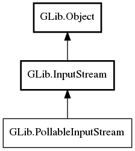

GLib.PollableInputStream Reference Manual
Packages
gio-2.0
GLib
PollableInputStream
can_poll
create_source
is_readable
read_nonblocking
read_nonblocking_fn
PollableInputStream
Object Hierarchy:

Description:
public
interface
PollableInputStream
:
InputStream
All known implementing classes:
ConverterInputStream
MemoryInputStream
MultipartInputStream
Namespace:
GLib
Package:
gio-2.0
Content:
Methods:
public
abstract
bool
can_poll
()
public
abstract
PollableSource
create_source
(
Cancellable
? cancellable =
null
)
public
abstract
bool
is_readable
()
public
ssize_t
read_nonblocking
(
uint8
[] buffer,
Cancellable
? cancellable =
null
)
throws
Error
public
abstract
ssize_t
read_nonblocking_fn
(
uint8
[] buffer)
throws
Error